Real-time vessel detection from Sentinel-1 SAR satellite imagery using orbital edge AI and YOLOv8 INT8 ONNX inference
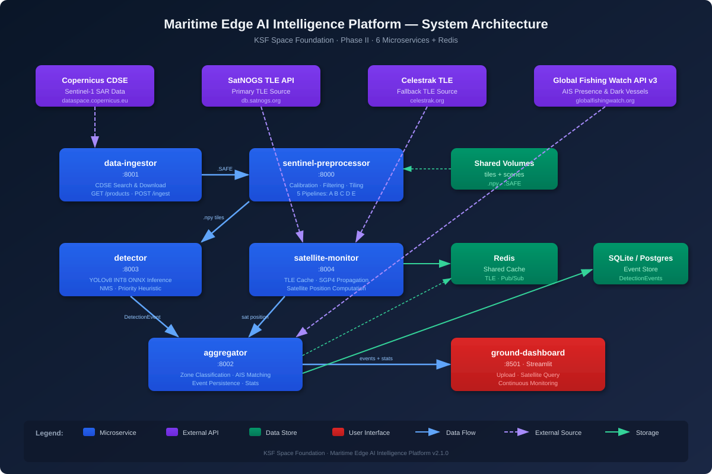
Maritime domain awareness is the effective understanding of anything associated with the global maritime environment that could impact security, safety, economy, or the environment.
Traditional real-time vessel monitoring relies heavily on the Automatic Identification System (AIS). AIS requires vessels to broadcast their GPS coordinates, identity, and heading. However, AIS is a cooperative technology — it relies on the compliance of the vessel's crew.
A "dark vessel" has disabled its AIS transponder, spoofed its location, or altered its transmission data. These vessels are frequently involved in illegal fishing, smuggling, and sanctions evasion.
Legacy satellites capture massive, uncompressed images and queue them for transmission to Earth. Because satellite downlink bandwidth is extremely narrow and ground station passes are limited to a few minutes per orbit, the delay between capturing an image and analyzing it can stretch from hours to days. This latency renders tactical intervention impossible.
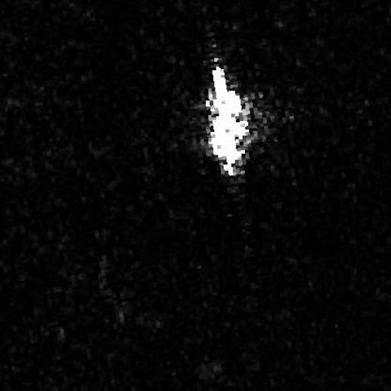
Optical satellites are blinded by clouds and ineffective at night. SAR provides the sensory foundation for true operational reliability.
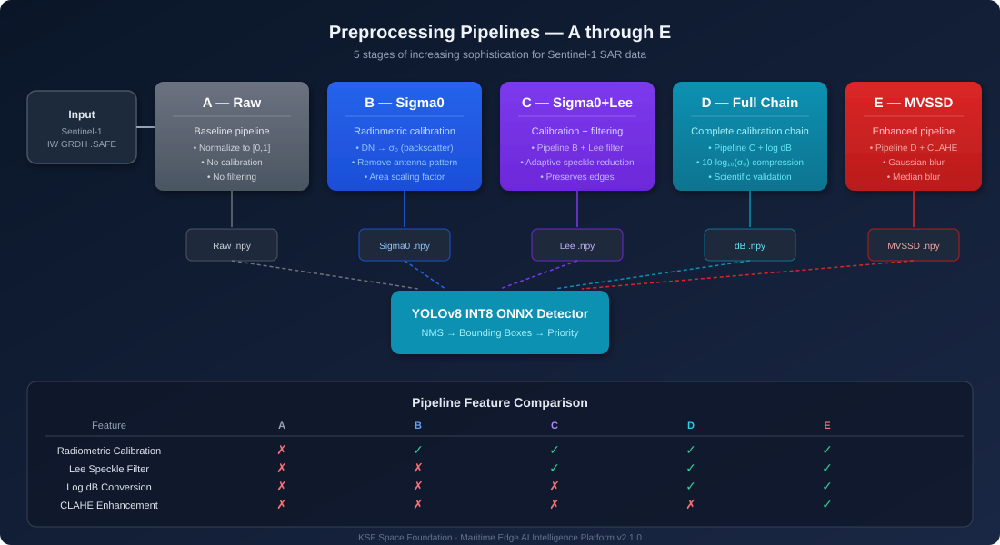
Sentinel-1 SAR satellite imagery is an active sensor. Instead of passively capturing reflected sunlight, the satellite emits its own microwave pulses and measures the backscatter.
Microwaves pass directly through clouds, fog, and darkness. When pulses hit the ocean surface, water scatters the energy away, rendering the ocean as a dark, noisy background. When pulses hit the angular, metallic hull of a ship, the "corner reflector" effect causes the vessel to appear as a brilliant, high-intensity pixel cluster.
Cross-polarization (VH) dramatically suppresses background sea clutter generated by wind and waves, maximizing the signal-to-noise ratio of metallic vessels. This contrast makes the subsequent AI detection pipeline mathematically viable.
The project utilizes the Copernicus Data Space Ecosystem as its primary data engineering pipeline. Diverse maritime datasets are extracted, audited, and converted into YOLO-compatible training assets — ensuring the AI learns from diverse sea states, viewing angles, and radar noise profiles.
Instead of downloading data, the platform uploads the intelligence. The most significant architectural innovation is where the computation happens.
Without atmosphere to dissipate heat, heavy computation can overheat the satellite.
Small solar panels impose tight power budgets, prohibiting power-hungry GPUs.
Onboard processors are typically low-power, CPU-only systems.
The system must extract intelligence from GBs of imagery and transmit only KBs of metadata.
Edge AI for maritime surveillance means executing machine learning inference directly on the satellite rather than on terrestrial servers. The AI extracts intelligence from gigabytes of SAR imagery and deletes the raw image, transmitting only a few kilobytes of metadata.
The platform utilizes a microservices pipeline consisting of 6 containerized stages running via Docker. These stages communicate asynchronously using a Redis publish/subscribe message broker.
Low-value events (empty ocean, AIS-compliant vessels) trigger only a tiny metadata ping. High-value events (dark vessels in protected zones) trigger a secondary segmentation model, cropping the region of interest for richer visual payload transmission.
6 microservices orchestrated via Docker Compose with Redis shared cache and health checks.
Searches and downloads Sentinel-1 products from the Copernicus Data Space Ecosystem.
GET /products
POST /ingest
Radiometric calibration, speckle filtering, dB conversion, tiling, and GCP georeferencing.
POST /preprocess
GET /pipelines
INT8-quantized YOLOv8 ONNX inference on preprocessed 512×512 .npy tiles.
POST /detect
GET /health
TLE caching and SGP4 satellite position computation with graceful fallback.
GET /tle/{id}
GET /position
Zone classification, GFW AIS matching, event persistence, and statistics.
POST /events
GET /stats
Streamlit UI with 3 operational modes: Upload, Satellite Query, Monitoring.
Mode 1: Upload
Mode 2: Query
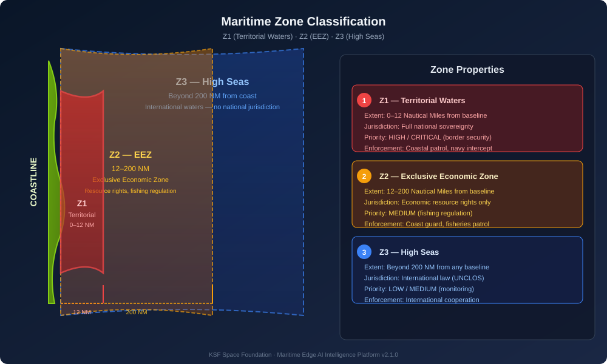
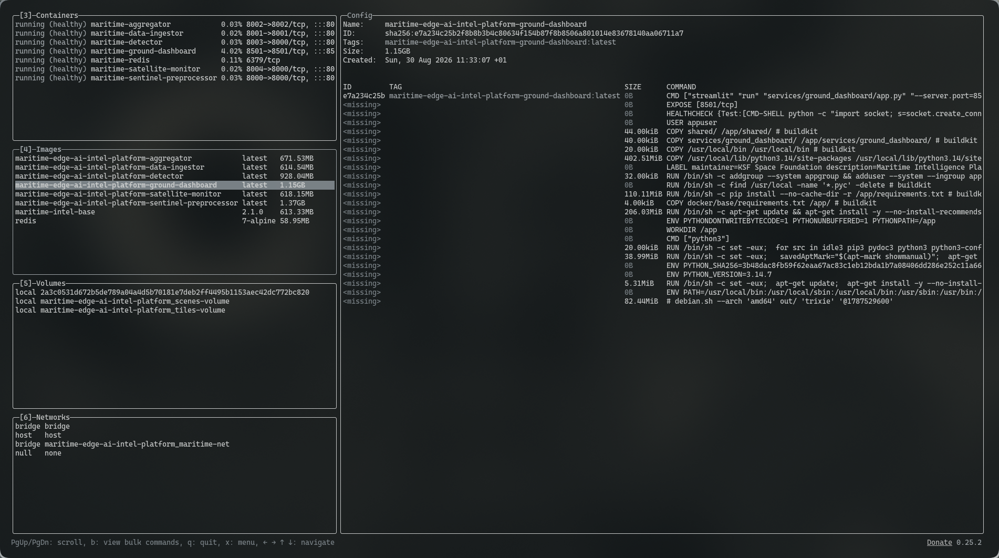
The mathematical heart of the platform — extreme optimization for CPU-bound inference on CubeSat hardware.
The platform utilizes YOLOv8n (You Only Look Once, version 8, nano) — an "anchor-free" architecture that predicts object centers directly, highly advantageous for satellite imagery where ships appear at any orientation and size.
Despite compressing mathematical precision, the model retains high Mean Average Precision (mAP) for ship detection — proving INT8 ONNX inference is optimal for mission-oriented space edge computing.
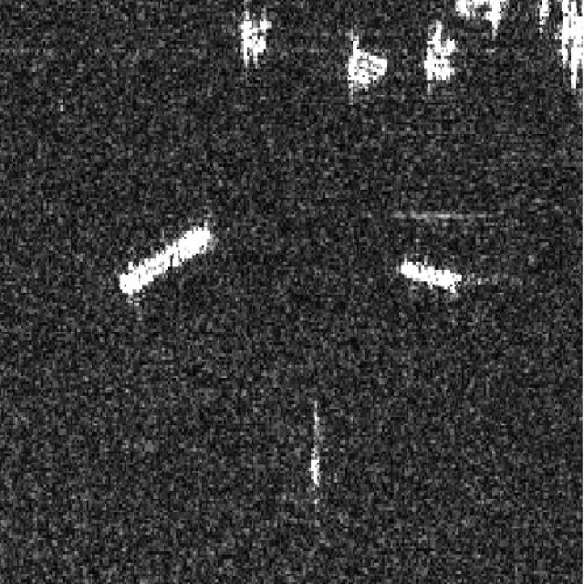
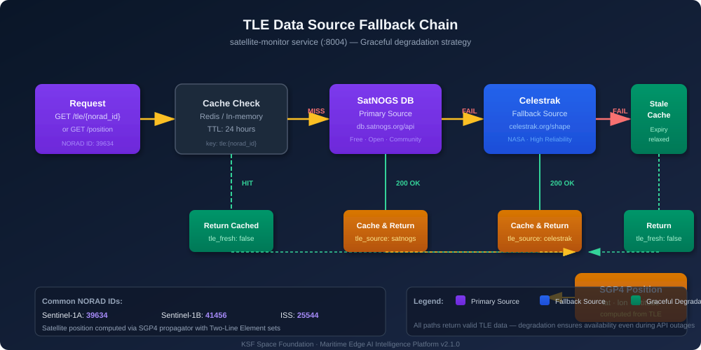
Because the CubeSat has already done the heavy cognitive lifting, the ground station doesn't need supercomputers — just a Streamlit dashboard.
Upload .npy tiles or raw .SAFE/.tiff SAR products. Pipeline selection (A–E). Direct detection or preprocess-then-detect.
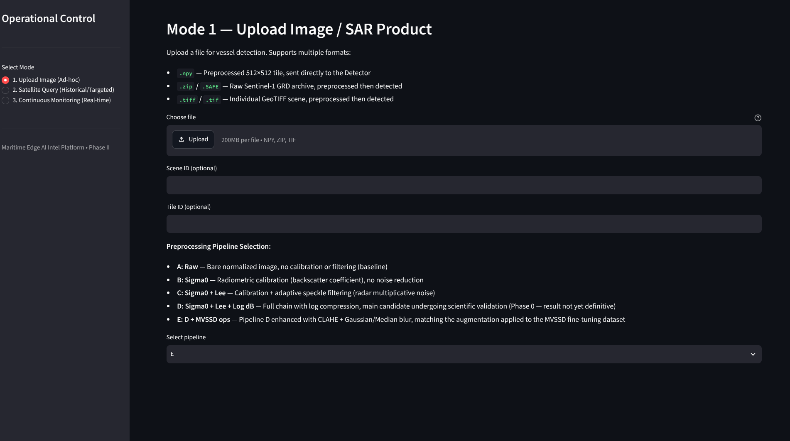
Query satellite position by NORAD ID (e.g. Sentinel-1A: 39634). Real-time SGP4 computation with TLE caching.
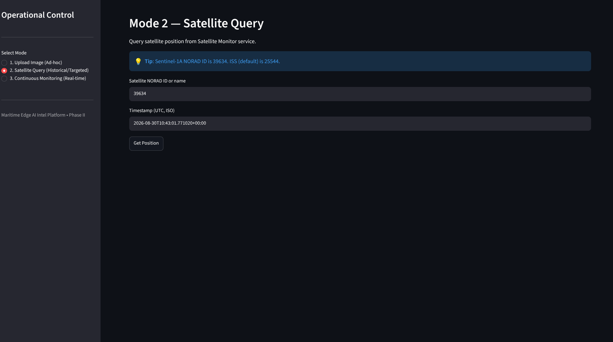
Real-time event list with zone and priority filters. Aggregated statistics by zone and priority level.
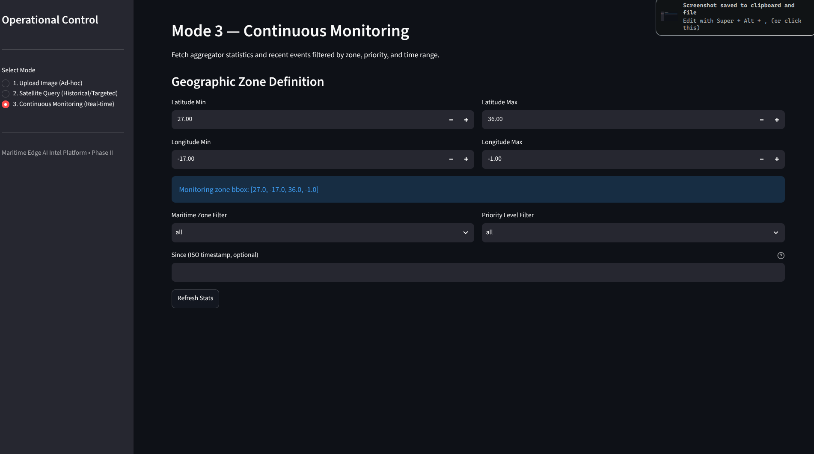
An analyst no longer spends hours squinting at raw Sentinel-1 SAR imagery. The dashboard immediately presents mission analytics: vessel coordinates, AIS correlation, dark vessel alerts, and segmented visual crops. A coast guard unit can dispatch interception immediately.
122 tests across 9 suites, automated linting, SAST scanning, and 60% coverage threshold.
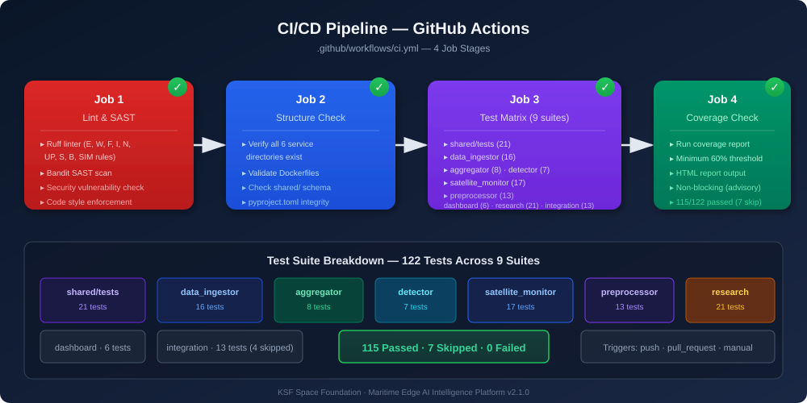
A profound leap in space-based surveillance — from data gathering to onboard reasoning.
The collaboration of the KSF Space Foundation and the architectural vision of the Maritime Edge AI Intelligence Platform demonstrates a profound leap in space-based surveillance.
By systematically addressing the bottlenecks of orbital observation — using SAR to bypass weather, engineering a microservices architecture for resilience, and utilizing INT8 quantization for CPU-bound inference — the platform solves the fundamental challenge of latency in the maritime domain.
Microwaves penetrate clouds, fog, and darkness — guaranteed operational reliability.
6 containerized stages with Redis pub/sub ensure fault isolation and scalability.
75% memory reduction with maintained accuracy — CPU-only inference on CubeSats.
Physical detection cross-referenced with AIS — flagging non-cooperative vessels instantly.
The focus is no longer on how much raw data a satellite can download, but on how much structural understanding it can synthesize in orbit. This shift from data-gathering to onboard reasoning is what will ultimately secure the oceans.
Get the complete written report as a PDF — covering architecture, implementation, testing, and findings.
📥 Download PDF Reportksf-space-maritime-edge-ai-intel-platform-report.pdf